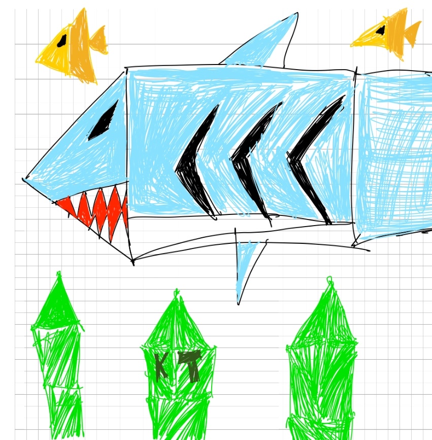

XXX
Actions: 0 | Undos available: 0 | Redos available: 0
Red
Green
Blue
Size
Circle Segment Count
Rainbow Speed
Eraser Size
Shark Picture Feature:
Click the Draw Shark Picture button to draw my picture in the canvas.

Bonus Features Implemented: (For 13. Awesomeness!)
- Rainbow Mode: Click the rainbow button to enable time and position based colors that change as you use the brush.
- Eraser Tool: Select the eraser to remove shapes. Adjust eraser size with the slider.
- Undo/Redo System: Undo/Redo Button:up to 20 steps for the amount of times you can undo.
- Export as PNG: Save PNG file: export the current canvas a PNG: file name is: webgl-drawing-(time)
- Color Picker: Choose any color using the built-in color picker: brings up OS color picker